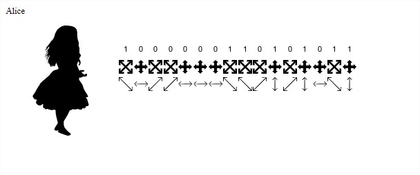
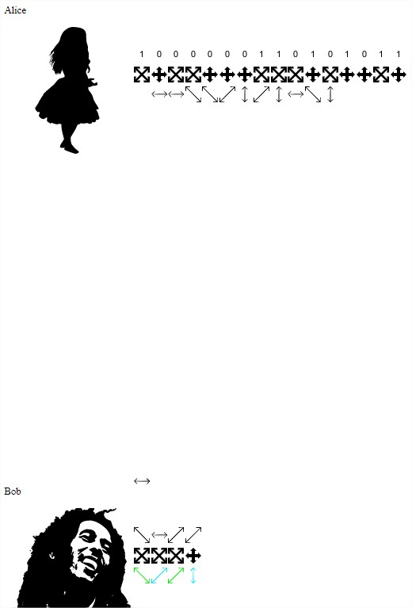
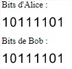

Cas sans Espion
Etape 1
Alice va générer une suite aléatoire de bit ainsi qu'une base pour encoder les bits généré suivant la liste donné plus haut
Etape 2
Alice envoie via le canal de communication quantique les photons polarisé à Bob. Pour chaque photon reçu il va choisir une base de façon aléatoire pour les décoder

Etape 3
Une fois que Bob à terminé de décoder les photons reçu il a 50% de chance d'avoir mal lu chaques photons, puisque les bases pour les décoder on été choisi aléatoirement. Il va donc communiquer les bases qu'il a utilisé pour décoder les photon à Alice sur un canal publique (pas montré dans l'animation) et Alice envoie les bases qu'elle à utilisé pour l'encodage. Une fois reçu Alice et Bob connaissent donc les bases de chacun et donc peuvent forger la clé en fonction des bonne bases

Sur cette image les bon photons récupéré par Bob sont affiché en Vert et les mauvais en Cyan si on ne garde que les bon photons et que l'on les traduits en bits on obtients :
Alice et Bob on maintenant une suite de bits connue seulement d'eux seul et peuvent créer un clé à partir de cette suite